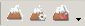

Level editor
|
The level editor is used to generate the level layouts (also called Area layouts) that are the basis for creating areas. A level layout is a non-interactive resource; the objects placed within it serve only to provide the physical structure and appearance of the area. If you need the player to interact with objects within an area you'll need to use interactive placeables instead.
Note that unlike the Area editor, only two modes of camera control are currently supported: "flycam" mode ( button in the toolbar) and 3DS Max mode (
button in the toolbar) and 3DS Max mode ( button). NWN style is not currently supported. (Use a combination of the mouse wheel + Ctrl or/and Alt (dependant on camera mode) to control the camera. In either mode Numpad 5 will reset the camera.)
button). NWN style is not currently supported. (Use a combination of the mouse wheel + Ctrl or/and Alt (dependant on camera mode) to control the camera. In either mode Numpad 5 will reset the camera.)
Area layouts are an Art Resource.
You can download the source files for the levels in the main campaign from here: [1]. (See also Area layouts used in the single player module for a listing of what each one is.)
Contents
Terminology
- Sector: A sector is a square of geometry and is currently exported to the game as a “Chunk”. For all intents and purposes, we can consider a sector and a chunk to cover the same area. The different term is kept to distinguish between source (sector) and output (chunk). Sectors are always square.
- Chunk: A Chunk is the game-side basic building blocks of Terrain based levels. Each Chunk is self-contained, has its own levels of Detail (LOD), RIMs, model lists, tree lists, etc. It is what is streamed in and out during gameplay.
- Base Resolution: This is the starting resolution of each cell, and can be specified in the wizard.
- Cell: A cell is the basic building block of the terrain geometry. Each cell starts off at the base resolution as a square and is made up of 2 polygons.
- Blend Mask: The blend mask is the mask that is used to paint textures on the terrain. It is a blend16 algorithm, where it blends the highest 4 texture values (out of a possible 16) on each texel to come up with a texture mapped terrain.
- Texture Palette: The texture palette is essentially a list of textures, one after the other. When an artist wants to use a texture to paint on the terrain he/she would add a texture to this palette.
- Blend Texel: These are the building blocks that make up the blend Mask. Each texel is comprised of 4 sets values and each value set is essentially a percentage of how much of that texture on the palette shows up, and a mapping of where it maps onto the mask.
- Tessellation: Tessellation is the breaking up of a cell into more resolution of polygons. For each tessellation level it breaks up each polygon into 4 equal parts.
Camera controls
Movement speed
In a level editor, camera movement speed in "flycam" mode can be increased and decreased by holding down a left CTRL and using a mouse wheel.
Interior and exterior levels
There are two basic types of levels; interior and exterior. Many features of these two level types are the same and level editor documentation will generally be applicable to both types unless specifically noted. Their key difference is that exterior levels have a terrain mesh (the "ground") and interior levels don't. Note however that there's no reason why you couldn't use one level type to "fake" the other - for example you could create a an entirely underground cave using an "exterior" level with the terrain mesh as the cave's floor.
Toolbar
{kind=link}
See sections below for detailed information on level editor specific toolbar buttons.
Terrain mesh
The terrain mesh is a deformable surface used in exterior levels to provide a "ground". This toolbar contains the tools that deals with the terrain mesh:
{kind=link}
Each of these buttons brings up a "brush" that's used for various tasks. See Terrain mesh for details.
Other tools
- Chunk boundary visualization - The chunk visualization tool is a button that will highlight where all the chunk/sector boundaries are, allowing the artist to plan the level accordingly. As you can see, it also highlights the models that fall into a colored chunk so that you can see which chunk these will fall into on export.
- Highlight impassible terrain - The game imposes limits on the slope of a walkable surface. Toggling this viewport button will display red highlights on the terrain wherever this limit is exceeded.
- Fade Cutaway Toggle - Cutoff, or 2 meter cutoff as it is called, is where we cut off the tops of models in interiors when we go into tactical camera mode, or overhead camera. This way we can still see the players. The cutoff tool allows the artists to visually see from the editor what will get removed when going into the tactical camera.
- Fade Punchthrough Toggle - Punch through is a system that allows the artists to put a flag on a model to say that it will get “punch through”. What this means is that when the game user is in tactical (overhead) camera mode, any model that is between the main character and the camera will get a punch through mask applied to it. This tool allows the artists to see in the editor what will get punched through in the game.
- Visualize Collision Objects - Turning on the visualize collision toggle will display all collision shapes in green/red wireframes. The green-red tinting is provided to make it easier to distinguish multiple objects from one another.
- Continuous Refresh Toggle - When the continuous refresh toggle is activated, the viewport will constantly redraw whenever it has free CPU time. This is useful for visualizing VFX and another animated models.
Lighting
There are many different types of lighting and light combinations that can be placed in the editor.
There are also many tools used to create lighting and generate lighting and even visualize lighting in the editor. The goal with the editor is to give the artist the same experience as he/she would see in the game. This will help them to be able to create the levels and tweak lighting quickly without having to stop to see it in-game.
Lights for the game are split into two categories based on what they affect: levels and characters. Character lights will affect the player, NPCs, and creatures. The level lights will affect static geometry and designer placeables.
See Lighting for more detail.
Models
Models are used to create any other objects that may be used as part of the level art - walls, floors, ceilings, non-interactive furnishings, visual effects, etc. ( )
)
- See Article: Model Placement
Trees and Vegetation is added using the "scatter object" mode ( ).
).
- See Article: Vegetation Placement
Animations
Some models have animations associated with them which may be set through the DefaultAnimation field of the Object Properties. For example, if you want a windmill or water wheel to turn you need to set that animation in the level editor. The animations for those two models are:
Windmill - wind
Waterwheel - turn
Room visibility and connectivity
Interior based levels have explicit connections between rooms, unlike exteriors where there is an implicit connection between two neighboring chunks. For this reason the connectivity must be set up by the artists. This should be done through planning and iteration as it will affect the streaming and performance of the level in the game.
If you select a room, you will see that that room appears highlighted in red. The Room Properties window can be brought up by pressing the Room Properties button. This behavior can be disabled by unchecking the Highlight visible rooms checkbox. All of the rooms that are visible to this room show up in green. You will see the list of these rooms show up in the Visible Rooms list in the picture above.
The ideal way to generate this visibility information is to press the button called “Generate Visibility Graph”. This will take a little bit of time, so sit back after you press it and be patient. What it does is take a render of each room in the level and generate a list of all rooms that can be seen from it.
NOTE: You must have generated pathfinding data for the level before you generate the visibility info, as it uses the pathing points in this process.
Of course this can be tweaked manually afterwards using the add and remove buttons. However if you ever press the Generate button again it will wipe out all manual changes.
The visibility system is used for streaming as well as the fog of war system, and determining what rooms are visible to the player depending on his/her current room. There is one other factor however to this, the connectivity system, which is detailed next.
The Room Connectivity System is necessary because there are things that can block visibility from one room to another. For instance if I’m looking up a hallway and I can see 3 rooms in the distance, but then I close the door in front of me, the game needs a way to know that those rooms are now invisible. This is where this system comes in.
The room connectivity system can be visualized by the other checkbox under the Connected Rooms list in the Rooms properties window.
Notice that the rooms connected to the current room show up in brown. This is a reminder that you are looking at connectivity and not visibility. As you can see only the rooms that are DIRECTLY connected to the selected room should be in this list. This has to built up manually, by clicking add and then clicking on the rooms that are connected to it. The add button in this case is more of a node, click it, then click the rooms you want to add, then you have to click it again to turn it off. This was done to make adding all the rooms faster.
Black boxes
When creating an indoor layout you'll need to manually insert "black box" objects on the outer sides of the layout's walls. This allows the player to see through the walls when the camera is outside them, and obscures any parts of models that protrude out where the player shouldn't be able to see them.
Trees, grass, and shrubberies
Trees, grass and shrubberies are handled somewhat differently from other models. They are created using a program called SpeedTree that includes information allowing them to respond to the wind. To place trees on a level, you first need to add that tree type's tree controller:
{kind=link}
Once this is done you can use the scatter object tool ( ) to place specific examples of the vegetation you've added controllers for.
) to place specific examples of the vegetation you've added controllers for.
See Vegetation for a gallery of the vegetation types included with the core resources.
Scatter Object Tool
The scatter object system allows the artist to place down both trees (and grass) and instanced models. An example of an instanced model would be some rocks scattered around on the ground. Objects that are scattered across the terrain level will be placed randomly inside the brush, and will also randomly fluctuate in size and orientation as well.
The Scatter object tool allows the artist to paint scatter object on the terrain. These scatter objects cannot be selected individually, but can only be added or removed with this tool. Left clicking adds scatter objects within the brush, right clicking removes them.
- Fill Rate: This is the rate at which the objects are scattered inside the brush.
- Radius: This is the radius of the brush that adds/removes scatter objects.
When the artist is painting scatter objects, he/she gets a palette, or Scatter Object Selection, from which to select which scatter object to paint. Currently there are 2 tabs, one for trees and the other for instanced models.
The artist can add items to this list by right clicking on the Terrain World and selecting Insert, and then choosing either new Tree Scatter Object or new Model Scatter object. In each case the artist will be able to browse a list of available resources.
- Ignore Density Setting: This allows the artist to ignore the density setting and paint scatter objects in much the same way as one would use a can of spraypaint.
- Maximum Density: This allows the artist to specify the maximum density of scatter objects in the brush radius, and the brush will only paint up to this maximum.
- Maximum Scale: This caps the maximum scale of the scatter objects, 1 being the same size as the original.
- Minimum Scale: This caps the minimum scale of the scatter objects, 1 being the same size as the original.
- Number of Painted Object: Lists the current number of this type of object that has been painted in the level (un-editable).
- Orient On Terrain Surface: When this is set to true, the objects will orient themselves according to the orientation of the terrain on which they are placed. For instance if you put a rock on the side of a hill, it will still appear “flat” to the ground. NOTE: Currently this does not work for trees or grass, they will always be complete vertical.
Water tools
See Water for detailed documentation on placing water in the level editor.
Wind
Each level can have one active wind object in it. The location of the wind object doesn't matter. The wind object defines how wind behaves on this level, which is used for such things as flapping banners and swaying trees.
To insert a wind object, right click on the terrain, and choose Insert > New Wind Object.
{kind=link}
For other weather effects, see Weather.
Pathfinding
Pathfinding is generated by clicking the toolbar button  . The pathfinding process lays down a grid of points that are marked "accessable" if they can be reached from a pathfinding start spot via passable terrain. This is essentially a flood-fill algorithm.
. The pathfinding process lays down a grid of points that are marked "accessable" if they can be reached from a pathfinding start spot via passable terrain. This is essentially a flood-fill algorithm.
In the case of exterior areas, you must select an exportable area before it will generate it, the error message will reflect this.
To see the existing pathfinding grid, click on the  toolbar button or select "Pathfinding nodes" under the "View" menu.
toolbar button or select "Pathfinding nodes" under the "View" menu.
"Passable" or "impassable" depends on a variety of factors such as the slope of the land, obstructions, or water depth. Accessibility Start points are represented by a blue ring with a red arrow. Note that these are different from waypoints, and are only used by the level editor for pathfinding purposes.
{kind=link}
Models will often contain collision volumes that will automatically make the places they're located impassible. Likewise, you can set a certain depth of water as being impassible and pathfinding will take this into account.
In order to get pathfinding to work, you must generate your starting point AFTER you create the exportable area, and use the name that is automatically generated for the starting point. DO NOT change the name of the starting point otherwise pathfinding will fail.
Terrain Collision
You will need to block off terrain using the Terrain Block tools 
{kind=link}
An example of a terrain block chain showing the path finding
{kind=link}
Hotkeys
| Key | Function |
|---|---|
| R | Standard Selection |
| Q | 3D Axis Manipulator |
| E | Rotation Manipulator |
| T | Local Coordinates (Toggle) |
| Key | Camera Functions |
| W | Camera Forward / In |
| S | Camera Back / Out |
| A | Camera Pan Left |
| D | Camera Pan Right |
| Key | Brush Size |
| - | Decrease Brush Radius |
| = | Increase Brush Radius |
| Key | Editing |
| Ctrl-X | Cut Selected Object(s) |
| Ctrl-C | Copy Selected Object(s) |
| Ctrl-V | Paste Selected Object(s) |
| Ctrl-Z | Undo last action |
| Ctrl-Y | Redo last action |
| Ctrl-A | Select All |
| Key | General |
| Ctrl-S | Save Map |
| Ctrl-O | Open Map |
| F5 | Refresh Screen |
| Del | Delete Selected Object |
| 5 (Numpad) | Camera Reset/Home (Looks at bottom right corner of map) |
| Ctrl-H | Hide Selected Object(s) |
| Ctrl-/ (Numpad) | UnHides Selected Object(s) |
| Ctrl-* | UnHides all hidden objects |
| Ctrl-\ | Invert Selection |
Tips
Groups are your friend.
Selecting a group will select all models inside that group folder. This allows you to move several objects at the same time as well as apply other settings to that entire group.
This also makes placing several grouped objects like torches with flame and lights very quick and easy. For example, Setting several candles with flame effects would take a lot of time to place each candle stick individually, and then placing the flame effect exactly on top of the candle for each. By using group folders you only need to set this up once. To place more candles simply select the group folder, Ctrl+C to copy, select its parent group, or other place you want to put the next candle and Ctrl+V to past the new group. Then simply drag it to where you want it.
{kind=link}
In addition, the Selection Lock and Visible properties of objects can be useful when trying to manipulate objects when larger objects obscure or get in the way of the desired selection. This is especially handy with water meshes.
Manage exports
The "Manage Exports" window is accessible from the Tools -> Exports -> Do All Export Operations menu option. It brings up a window where you can select from all steps in the level-exporting process:
{kind=link}
Known Issues
- Owing to path bugs, the safe approach is to do all custom level processing (light mapping and local posts) in the Single Player module. For compatibility, move the output to your add-in's core override folder before distribution to players. Note that if you try to play Dragon Age with any exported Single Player resources, your game may have strange bugs (not being able to add party members) - so never play without removing all output from the Single Player module!
- "RPU process failed with a return code of -1073741811" may occur if AVG anti-virus Identity Protection is enabled.